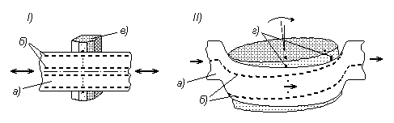

3.3. Запоминающие устройства со сменными магнитными носителями
3.3.1. Накопители на гибких магнитных дискахКроме жестких дисков, а также приводов компакт-дисков и DVD дисков, являющихся наиболее распространенными ЗУ с подвижным носителем, существует еще достаточно много разновидностей ЗУ этого класса. К самым известным из них относятся гибкие диски, ЗУ на сменных магнитных и магнитооптических дисках и ЗУ на магнитных лентах - стримеры.
3.3.1. Накопители на гибких магнитных дисках
Накопители на гибких магнитных дисках НГМД (FDD - floppy disk drives) были разработаны сотрудником фирмы IBM Аланом Шугартом в конце 1960-х годов. Первоначально они использовались как постоянная память, в частности, для хранения микропрограмм, затем появились гибкие диски с возможностью записи. В персональных ЭВМ они устанавливаются, практически, с первых моделей. С тех пор гибкие диски уменьшились в размере, примерно вдвое (с 8 до 3,5 дюймов), а емкость их возросла, примерно в 30 раз (со 100 Кбайт до 2,88 Мбайт), что совсем немного для такого длительного периода.
Гибкий диск (дискета) по размещению информации на нем схож с жестким диском: у 3,5 дюймовой дискеты (диаметром около 85 мм) имеется по 80 концентрических дорожек с обеих сторон, на которых могут быть записаны по 9, 18 или 36 секторов размером 512 байтов каждый (что дает соответственно емкость дискеты 720 Кбайт, 1,44 Мбайт и 2,88 Мбайт). Наиболее распространенным вариантом являются дискеты емкостью 1,44 Мбайт. Их можно разметить и иным способом, например увеличив число секторов до 20 (что позволяет сделать известный драйвер 800.com), однако это, как правило, приводит к снижению надежности считывания.
В принципе, контроллеры гибких дисков позволяют также изменять размер и нумерацию секторов и количество используемых дорожек.
Начало дорожки на дискетах отмечается специальным индексным отверстием. У старых (5-дюймовых) дискет это отверстие было сделано непосредственно в диске и его футляре, у 3,5-дюймовых - оно расположено в металлической вставке, занимающей центральную часть гибкого диска.
Кроме 3,5-дюймовых дискет, существовали 8- и 5-дюймовые дискеты различной емкости, имевшие различную плотность записи, количество дорожек, в том числе, с записью только на одной стороне диска, но в настоящее время они уже давно не используются.
Привод накопителя на гибких магнитных дисках включает в себя электромеханическую часть с блоком головок чтения/записи и электронную часть.
Электромеханическая часть включает в себя шпиндельный двигатель, привод позиционирования головок чтения/записи и систему загрузки дискеты.
Шпиндельный двигатель низкооборотный: гибкий диск вращается с постоянной (после разгона) угловой скоростью 300-360 об/мин. Стабильность скорости вращения поддерживается следящей системой.
Привод позиционирования головок построен на основе шагового двигателя, перемещающего головки на нужный цилиндр при повороте вала двигателя на заданный угол, посредством подачи на него соответствующего количества импульсов. Обратной связи при этом не предусмотрено и погрешность позиционирования определяется механикой привода. При ее износе и температурных изменениях размеров погрешности растут и дискета может "не читаться".
После перемещения головок проверяется адресный маркер дорожки и, если он не совпадает с требуемым, позиционирование повторяется посредством возврата на нулевую дорожку и последующей подачи необходимого количества импульсов на шаговый двигатель. Для определения выхода на нулевую дорожку в накопителе имеется специальный датчик. Положение нулевой дорожки можно подстраивать поворотом шагового двигателя.
Сами головки чтения/записи более простые, чем у жестких дисков, так как плотность записи информации в НГМД значительно ниже (135 дорожек на дюйм, а не несколько десятков тысяч). Они представляют собой обычные электромагнитные головки, осуществляющие чтение и запись при непосредственном контакте с дискетой, что возможно в связи с малой скоростью ее вращения. Однако такой способ, будучи более простым в реализации, менее надежен и приводит к более быстрому износу дискет и головок.
Для уменьшения взаимного влияния верхняя и нижняя головки несколько смещены относительно друг друга по радиусу. Нижняя головка имеет номер 0, верхняя - 1.
В наиболее распространенных 3,5-дюймовых накопителях при загрузке дискеты она вставляется в металлическую рамку внутри накопителя. В конце движения вовнутрь рамка с дискетой резко опускается вниз, приводя ее в контакт с магнитной пластиной шпинделя, удерживающей центральную металлическую пластинку дискеты, и нижней головкой. Сверху прижимается вторая головка. Кроме того, от усилия вставления дискеты взводится пружинный механизм, выталкивающий ее при извлечении из накопителя.
Электронная часть НГМД содержит схемы управления двигателями, усилители сигналов для головок чтения/записи и дополнительные формирователи сигналов датчиков. В отличие от накопителей на жестких дисках контроллер в электронику, установленную непосредственно в НГМД, не входит.
Интерфейс накопителей на гибких дисках достаточно прост. Он включает в себя сигналы управления шпиндельным двигателем и шаговым двигателем перемещения головок, линии данных считывания и записи (однобитные) и некоторые вспомогательные сигналы (в том числе, защита записи, индекс начала дорожки, нулевая дорожка, выбор стороны диска, смена диска).
В персональных ЭВМ НГМД подключается 34-проводным кабелем (шлейфом), который можно использовать для двух дисководов. Все провода этого кабеля с нечетными номерами - земля. Физически сигналы по линиям передаются стандартными уровнями ТТЛ.
Контроллер накопителей на гибких магнитных дисках внешний. В ПЭВМ он располагается в одной из микросхем чипсета (в южном мосте, или контроллере ввода-вывода). Для передачи данных контроллер обычно использует режим прямого доступа к памяти.
Время обращения к НГМД обычно не является критическим параметром. Оценить его величину можно зная скорость вращения шпинделя и емкость дорожки. При скорости вращения 300 об/мин и емкости дорожки 9 Кбайт (18 секторов по 512 байт) скорость передачи данных составляет примерно 50 Кбайт/с. Время перемещения головок на один шаг имеет тот же порядок, что и для жестких дисков (2 мс и выше для более старых накопителей). Соответственно перемещение между крайними цилиндрами займет уже в 4-5 раз больше времени. Кроме того, следует принять в расчет еще и время успокоения головок после позиционирования (порядка 15 мс).
3.3.2. Запоминающие устройства со сменными магнитными и магнитооптическими дисками
Малая емкость накопителей на гибких магнитных дисках стимулировала разработки по созданию более емких устройств со сменными магнитными носителями. (Однако судьба их оказалась в чем-то схожа с ЗУ на тонких магнитных пленках и цилиндрических магнитных доменах, которые, в свое время, развивая технологические или физические принципы непосредственно предшествующих им технологий ЗУ, оказались вытесненными с приходом на рынок памяти новых технологий: флэш-памяти и перезаписываемых оптических дисков.)
Эти работы велись в несколько различных направлениях, предполагая использование сменных носителей типа:
- гибких магнитных дисков с повышенной плотностью записи;
- жестких магнитных дисков;
- дисков с иной (магнитооптической) технологией записи данных.
Гибкие магнитные диски большой емкости были реализованы различными способами, но так или иначе в них, в отличие от обычных НГМД, система позиционирования головок не является разомкнутой, а имеет обратную связь. Известны следующие основные разновидности этих устройств:
- диски Бернулли;
- накопители Zip той же фирмы Iomega;
- накопители LS-120.
Диски Бернулли были разработаны фирмой Iomega и появились в 1983 году. Они представляют собой гибкие диски, помещенные в жесткий футляр. Диск вращается с высокой скоростью (более 3500 об/мин), а создаваемый при этом воздушный поток изгибает его, в соответствии с эффектом Бернулли, поджимая к головке чтения/записи. Однако диск не соприкасается с головкой, а между ними остается тонкий (около 50 мкм) воздушный слой, подобно тому, как это имеет место в жестких дисках. (Требуемому направлению воздушного потока способствует неподвижная пластина, размещенная внутри футляра определенным образом.). Но при неподвижной головке наличие загрязнений на поверхности диска или механические удары не приводят к их соприкосновению (как это произошло бы в жестком диске), напротив, эффект Бернулли нарушается и диск отходит от головки. Поэтому сохранность запоминающей среды и надежность таких дисков являлись очень высокими. Диски имели емкость от 10 до 230 Мб и выпускались в 8- и 5-дюймовом форматах. В настоящее время не производятся.
Накопители Zip были представлены фирмой Iomega в 1994 году в качестве следующей альтернативы традиционным накопителям на гибких магнитных дисках. В принципе, их можно отнести к 3,5-дюймовой разновидности дисков Бернулли. Однако в этих накопителях именно головки чтения/записи удерживаются воздушным потоком над вращающимся диском, аналогично жесткому диску. И хотя эти диски оказались дешевле своих предшественников, надежность их была ниже.
Гибкие диски, используемые в этом накопителе, также помещены в пластмассовый футляр - картридж, габариты которого близки к габаритам 3,5-дюймовой дискеты, несколько превосходя ее по толщине.
В Zip накопителе плотность записи информации повышается, по сравнению с обычными гибкими дисками, за счет применения системы позиционирования, схожей по организации с жесткими дисками. Здесь также на диске записаны серводорожки, с помощью которых и производится установка головок чтения/записи. Также, как и в жестких дисках, передвижение блока головок производится с помощью катушки, перемещающейся в магнитном поле при протекании по ней электрического тока. Только это движение, в отличие от жестких дисков, происходит линейно, строго по радиусу дискеты.
Скорость вращения шпинделя составляет до 3600 об/мин, а время его разгона и останова - 3 с. Емкость дисков до 750 Мбайт, среднее время доступа 29 мс, скорость передачи данных до 7,5 Мбайт/с.
Поскольку картридж, используемый в Zip накопителе, не является герметичным, надежность работы этого ЗУ существенно ниже, чем у жестких дисков, а износ дискет выше.
Совместимости с обычными гибкими дисками этот тип накопителей не обеспечивает.
В накопителях LS-120 (Laser Servo) используется несколько иной путь повышения точности позиционирования головок (а, следовательно, и плотности записи): применение оптической системы.
На поверхности диска лучом лазера нанесены отражающие (серво) дорожки, за которыми следит лазерная головка. Это позволило повысить плотность записи со 135 дорожек на дюйм у обычных гибких дисков до 2490 (получив, примерно по 1700 дорожек на каждой стороне дискеты) и увеличить емкость дискеты до 120 Мбайт. Иногда их называют гибкими магнитооптическими дисками, однако, это не относится к используемому принципу записи информации, который остается чисто магнитным.
Накопители LS-120 совместимы с обычными 3,5-дюймовыми дискетами за счет использования комбинированной двухэлементной головки чтения/записи.
Скорость вращения диска составляет 720 об/мин, среднее время поиска - 65 мс, время перехода с дорожки на дорожку - 6 мс, скорость передачи данных не превышает 600 Кбайт/с.
Сменные жесткие магнитные диски были разработаны фирмой SyQuest, а выпуск их был налажен также и рядом других фирм.
В накопителях этого типа жесткие диски (одна или две стандартных пластины) размещаются в герметичном картридже вместе с головками чтения/записи. Это позволяет приблизить их параметры к параметрам жестких дисков: емкость до 540 Мбайт, скорость вращения шпинделя 3600 об/мин, время доступа 12 мс, скорость передачи данных более 10 Мбайт/с (для интерфейса SCSI), - однако оказывается достаточно дорогим решением.
Накопители со сменными жесткими дисками под маркой Jaz выпускает также и фирма Iomega. В этих накопителях в картридже находится только жесткий диск, закрытый пылезащитной шторкой, которая сдвигается, когда картридж с диском вставляется в накопитель. Головки чтения/записи, аналогичные головкам жесткого диска, находятся в самом накопителе.
Емкость такого диска достигает 2 Гбайт, скорость передачи данных до 8 Мбайт/с, время поиска - 12 мс.
В магнитооптических дисках для записи и чтения информации, как следует из их названия, используются не только магнитные, но и оптические свойства носителей.
Запись информации производится при воздействии магнитного поля на участок носителя, разогреваемый лазерным лучом до критической температуры точки Кюри, поэтому в обычном состоянии обеспечивается высокая надежность хранения информации.
При чтении данных используют магнитооптический эффект Керра, заключающийся в изменении поляризации плоско поляризованного светового луча при отражении его от поверхности, обладающей магнитными свойствами (подобный эффект, но для проходящего луча, использовался и в упоминаемых выше ЗУ на тонких магнитных пленках).
Привод магнитооптического диска аналогичен приводам других типов дисков. Магнитный слой на диске размещается под прозрачным слоем пластмассы толщиной около миллиметра. Головка чтения/записи, вместе с лазером и оптической системой, находится на расстоянии порядка 1 мм от поверхности диска, что обеспечивает высокую надежность этого накопителя.
Магнитооптические диски (МОД) выпускаются 5- и 3,5-дюймового размера и имеют емкость до 4,5 Мбайт, среднее время доступа (поиск + время подвода сектора) порядка 30-40 мс, скорость передачи данных порядка 5 Мбайт/с.
Кроме перечисленных типов накопителей имеются еще несколько разновидностей дисковых накопителей со сменными магнитными или магнитооптическими носителями.
Однако, несмотря на отлаженные технологии рассмотренных накопителей, их уже или вытеснили, или постепенно вытесняют оптические и "твердотельные" (флэш) диски.
3.3.3. Накопители на магнитных лентах
Накопители на магнитных лентах (НМЛ) являются одним из наиболее давно используемых в качестве массовой памяти типом устройств. Первые такие накопители имелись уже в ЭВМ пятидесятых годов прошлого столетия. Технология для них также, как и впоследствии для CD-ROM, была "подготовлена" звукозаписывающей техникой.
Основными достоинствами НМЛ были большая емкость и невысокая стоимость носителя информации: (сначала бобины, кассеты, а затем картриджа) магнитной ленты. Основным недостатком - последовательный доступ к данным, требующий большого времени.
За время своего существования НМЛ только на начальных этапах успешно конкурировали со своими ближайшими "родственниками": магнитными барабанами, которых им удалось пережить, и магнитными дисками, которые заняли ведущую роль примерно с начала 1960-х годов, оставив для НМЛ лишь роль систем архивного хранения данных.
Тем не менее, даже несмотря на появление оптических дисков, НМЛ достаточно прочно удерживают свои позиции в качестве устройств резервного копирования больших объемов данных в секторе корпоративных решений.
В своей современной версии НМЛ более известны под названием стримеры (транслитерация английского streamer, происходящего от слова "поток"). В этом своем виде они многое позаимствовали от кассетных аудио- и видеомагнитофонов. Существует несколько разновидностей стримеров, различающихся размером используемых магнитных лент и особенностями размещения информации на них.
Два основных варианта записи на ленту с дорожками:
- продольными, расположенными параллельно краю магнитной ленты и проходящими по всей ее длине (как у обычных магнитофонов);
- спиральными (точнее, наклонными), проходящими по диагонали от одного края ленты к другому, которые получаются при использовании головок записи, вращающихся (со скоростью 2000 об/мин) вокруг оси, наклоненной под некоторым углом (порядка 5°) к перпендикуляру к направлению движения ленты (как в видеомагнитофонах).
Два этих варианта схематически показаны на рис. 37. Второму случаю хотя и соответствует меньшая скорость движения самой ленты (всего 2,5 см/с), но тем не менее износ ленты и головок выше, вследствие большей площади контакта ленты с вращающейся головкой.

Рис. 37. Продольное I) и спиральное II) расположение дорожек на магнитной ленте стримеров: а) магнитная лента, б) дорожки, в) фиксированная магнитная головка, г) вращающиеся магнитные головки
В случае продольных дорожек запись и чтение обычно осуществляются в двух направлениях движения ленты, как в кассетном магнитофоне.
Как правило, стример включает в себя лентопротяжный механизм, в простейшем случае аналогичный используемым в аудио- и видеомагнитофонах, головки чтения/записи, механизм загрузки ленты и контроллер. Магнитная лента помещена в картридж, подобный используемым в (видео) магнитофонах кассетам. Однако такая конструкция, в особенности при использовании записи по спиральным дорожкам, как правило, приводит к сильному натяжению и высокому износу ленты, что ухудшает характеристики надежности накопителя.
Поэтому в качественных системах используют более сложные лентопротяжные механизмы, например с роликовыми направляющими, ведущими ленту по противоположной магнитному слою стороне, а также применяют специальную магнитную ленту и конструкции картриджей.
Основные проблемы, на которых концентрируются разработчики стримеров, связаны с повышением емкости носителей, скорости записи и передачи данных, надежности хранения и считывания данных уменьшением времени поиска и износа ленты.
При этом при создании НМЛ часто используют технологические приемы, характерные и для других видов памяти с подвижными магнитными носителями.
В частности, для повышения плотности расположения дорожек могут использоваться серводорожки и следящие системы, как и в накопителях на жестких дисках, что позволяет разместить до 200 дорожек на ленте шириной 8 мм.
Ускорения записи и считывания достигают улучшением характеристик магнитных головок и магнитной ленты, записью и чтением одновременно по нескольким дорожкам, использованием внутренних буферов и сжатием данных при их записи.
Для ускорения поиска в некоторых накопителях картриджи с лентой оснащаются внутренним ЗУ, в котором записывается некоторый аналог таблицы размещения файлов.
Для повышения надежности хранения данных используются контрольные и корректирующие коды, в частности циклические коды и коды Рида-Соломона.
Характеристики НМЛ могут существенно различаться в зависимости от их конструкции и технологии записи. Так, емкости стримеров варьируются в широких пределах, достигая 600 Гбайт, скорости передачи у лучших НМЛ сравнимы с жесткими дисками, составляя до 60 Мбайт/с, время поиска (доступа) в некоторых моделях составляет до 10 секунд (при среднем - порядка 80-100 с).
На основе стримеров строятся также специальные автоматизированные библиотеки, в которых обеспечена возможность хранения многих картриджей с лентой и автоматической установки и замены их в накопителях. Причем в сложных системах может использоваться до нескольких сотен накопителей и храниться несколько тысяч картриджей.
Кроме того, на базе НМЛ организуются массивы, аналогичные RAID-массивам жестких дисков (см. п.4.2.3). Производители НМЛ декларируют при этом возможность повышения пропускной способности такой системы в соответствующее количеству используемых накопителей раз.